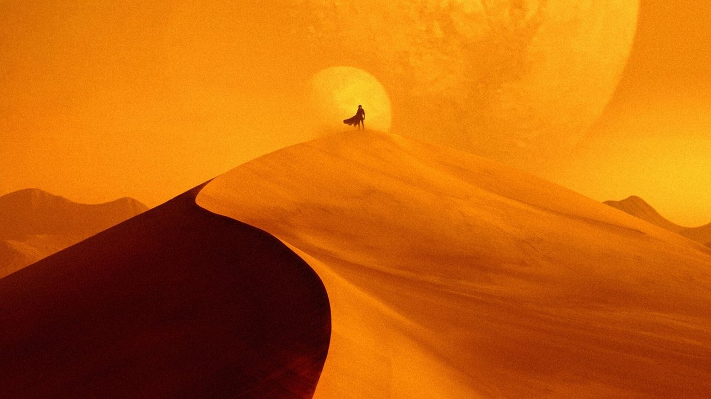

沙丘：第二部
Dune: Part Two (2024) · 導演：丹尼·維勒納夫 · 主演：提摩西·夏勒梅、辛蒂亞、蕾貝卡·弗格森、奧斯汀·巴特勒
「這不是一曲救世主的英雄凱歌，而是一場被狂熱信仰與命運洪流所裹挾吞噬的宇宙級權力悲劇。」
★ 多維度深度評析
綜合評析指數：9.6 / 10這部作品極度適合你，如果：
- 追求極致大銀幕視聽轟炸與世界級音場震撼的影院狂熱者
- 沉迷於丹尼·維勒納夫冷冽、嚴謹、神聖的「巨物感」攝影美學
- 對宗教狂熱、反英雄彌賽亞神話與帝國政治角力有興趣的深度影迷
觀看前請做好心理準備，如果：
- 片長長達 166 分鐘且哲學與政治資訊龐雜，疲憊時觀賞可能稍感沉重
- 尚未觀看第一部者，建議先補足前情提要，否則家族恩怨不易快速進入狀況
無雷簡介與觀影指引
接續第一部的逃亡之旅，保羅·亞崔迪（提摩西·夏勒梅 飾）與母親潔西嘉女士融入了厄拉科斯沙漠的原住民弗瑞曼人之中。在嚴酷的沙漠試煉中，保羅逐漸學習沙行與駕馭沙蟲，並贏得了弗瑞曼戰士的尊重與荃妮（辛蒂亞 飾）的深厚愛意。
然而，哈肯能家族與帝國皇帝的陰影步步進逼，南部原住民將保羅視為預言中的「天外之音」（Lisan al-Gaib）。維勒納夫在視覺與聽覺上的掌控力登峰造極，漢斯·季默的配樂與格雷格·弗萊瑟的沙漠黑白鏡頭呈現，構成了本世紀最具壓迫感的大銀幕體驗。強烈建議選擇 IMAX 規格觀賞！
⚠️
深度劇情剖析與結局探討（含重大劇透）
點擊以展開完整解析：含結局抉擇、原著差異與聖戰開端
▼
深度劇情剖析與結局探討（含重大劇透）
點擊以展開完整解析：含結局抉擇、原著差異與聖戰開端
#1 預言的本質：不是救贖，而是殖民控制的符號工具
電影最深刻的改編在於對「貝尼·潔瑟睿德姐妹會」宗教預言的去神話化。保羅深知「天外之音」只是數百年來姐妹會深植於當地的思想控制手段，但他為了向哈肯能與皇帝復仇，最終不得不選擇飲下生命之水，主動戴上這頂虛假的先知冠冕。
#2 荃妮的視角轉變：悲劇的見證者與反英雄的清醒痛楚
相較於原著中荃妮的順從，電影賦予了荃妮現代性的批判視角。她代表了清醒與自由意志，看著愛人從並肩作戰的少年一步步墮落為發動聖戰的專制君主。當保羅在皇帝面前宣稱迎娶伊若琅公主時，荃妮決然騎上沙蟲離開的背影，成為整部電影最淒美也最震撼的收尾。
#3 聖戰引爆：反英雄的無可奈何與「小心有魅力的領袖」
大氏族的戰艦拒絕承認新皇，保羅平靜地吐出「帶他們去天堂」（Lead them to paradise），數百億人的浩劫就此開啟。導演精準傳達了原著作者法蘭克·赫伯特的警世名言：「小心那些有魅力的領袖。」